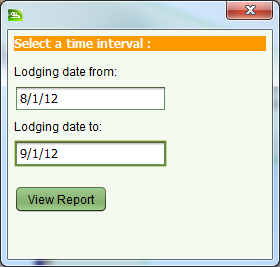

The Lodgement Report lists information on the number of applications and services processed during a given time period. It can be accessed using the Reports > Lodgement Report menu option in the SOLA Desktop main menu. Enter the appropriate time interval in the dialog displayed and click View Report to generate the Lodgement Report.
